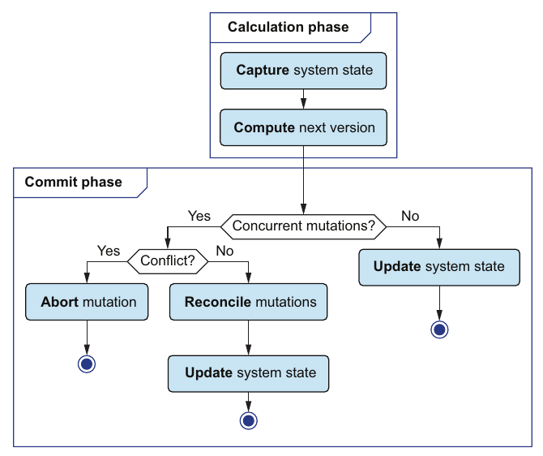
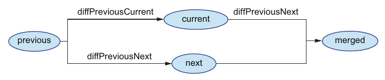

فصل ۵ · صص. ۹۱–۱۰۹
کنترل پایهی concurrency
Basic concurrency control
Data-Oriented Programming, 1st Edition
در production، mutationها concurrent اجرا میشوند، پس پیش بردن سادهلوحانهی ارجاع state، آنطور که فصل ۴ کرد، بس نیست (ص. ۹۱). روش DOP از optimistic concurrency control کار میکشد، راهبردی بی قفل که کتاب Elasticsearch را گواه میآورد و در آن mutationها «بهجای اجازه، بخشش میخواهند» (صص. ۹۲–۹۳). فاز حساب هنوز چنان حساب میکند که گویی تنها mutation در اجراست. تنها فاز commit عوض میشود: version پسین را با هر چه میان کار commit شده reconciliation میدهد، تقریباً همانطور که Git شاخهای را درهم میآمیزد (صص. ۹۳–۹۶):
- پیشروی تند اگر state عوض نشده باشد.
- الگوی three-way merge اگر تغییرهای concurrent به فیلدهای مختلف دست بزنند.
- عمل abort اگر به همان فیلد دست بزنند؛ کاربر از نو تلاش میکند.
تکهها یکی diff ساختاری از دو map است (صص. ۹۹–۱۰۲)، یکی informationPaths از یک diff (ص. ۱۰۴)، یکی سنجش اینکه دو diff هیچ مسیری را شریک نیستند، و _.merge برای پیاده کردن وصله (ص. ۱۰۵). دو واقعیت در باب دادهی immutable آن را کارآمد میکند: زیردرختهای دستنخورده شریکند، پس diff همانجا رویشان برمیگردد، و versionها با ارجاع سنجیدنیاند (صص. ۱۰۲، ۱۰۷). کد commit همهجاکار است و برای هر سیستمی کار میکند که دادهاش hash map immutable باشد (ص. ۹۳). هنوز thread-safe نیست؛ و فصل ۸ درستش میکند (ص. ۱۰۸).
فهرست خود فصل (از فهرست مطالب کتاب)
از فهرست خود کتاب، یعنی bookmarkهای PDF؛ شمارهی صفحهها چاپیاند.
- ۵.۱ optimistic concurrency control — ص. ۹۲
- ۵.۲ reconciliation میان mutationهای concurrent — ص. ۹۴
- ۵.۳ تحویل بردن مجموعهها — ص. ۹۷
- ۵.۴ تفاوت ساختاری — ص. ۹۹
- ۵.۵ پیاده کردن الگوریتم reconciliation — ص. ۱۰۶
- خلاصه — ص. ۱۰۸
از کتاب
مقدمه
کتاب هشدار میدهد که این فصل کوشش بیشتری میبرد: جریان reconciliation بدیهی نیست، و پیادهسازیاش بازگشتی نابدیهی دارد (ص. ۹۲). پیش از کار، تئو و جو از ناسازیهای خانه میگویند. تئو و همسرش جین سر بودجهی خانه پیش کارشناس Imago Relationship Therapy رفتند، که مایهی آن روز، یعنی حل ناسازی، را راه میاندازد (ص. ۹۲).
از کتاب
۵.۱ optimistic concurrency control
روش DOP هیچ قفلی به کار نمیبرد: قفلها به کارایی میزنند و اگر مراقب نباشید deadlock میکنند (ص. ۹۲). optimistic concurrency control یا OCC همان راهبردی است که میگذارد پایگاههایی مانند Elasticsearch مقیاس بگیرند، و به DOP میخورد چون «وقتی دادهی سیستم immutable است فوقکارآمد است» (صص. ۹۲–۹۳).
| فاز | مسئولیت | وضع state | پیادهسازی (جدول ۵.۱، ص. ۹۳) |
|---|---|---|---|
| حساب | state پسین را جدا حساب میکند | بیstate | ویژه |
| commit | reconciliation میدهد و state سیستم را بهروز میکند | باstate | مشترک |


دو merge request که یک فایل config را عوض میکنند همان mutationهای concurrent کتاباند و GitLab با rebase آنها را reconcile میکند.
?نوبت شما · چرا GitLab بهجای قفل کردن فایل، conflict را هنگام merge گزارش میکند؟دیدن پاسخ
چون این optimistic concurrency control است: هر کس آزادانه روی نسخهی خودش کار میکند و فقط هنگام commit تفاوتها مقایسه میشوند؛ وقتی conflict نادر است، این از قفل ارزانتر است (صص. ۹۲–۹۴).
از کتاب
۵.۲ reconciliation میان mutationهای concurrent
مثالهایی از ناسازی: دو عضو که همان یک نسخهی کتاب را قرض میگیرند، یا دو کتابدار که سال نشر همان یک کتاب را بهروز میکنند (ص. ۹۴). reconciliation به درهمآمیختن شاخهای در Git میماند. اگر main تکان نخورده باشد، Git تند پیش میرود؛ و اگر میان کار کسی commit کرده باشد، three-way merge میکند، و خطی که در هر دو سو عوض شده حل دستی میخواهد (ص. ۹۴). روش DOP همان را میکند، جز آنکه ناسازی mutation را abort میکند (ص. ۹۵).
وقتی فاز commit آغاز میشود سه version هست (شکل ۵.۳، ص. ۹۵):
| version | چیست |
|---|---|
previous | versionی که فاز حساب حسابش را رویش نشاند |
current | مقدار state سیستم سر commit؛ اگر mutationهای دیگری concurrent commit کرده باشند از previous فرق دارد |
next | versionی که فاز حساب برگرداند |
اگر current همان previous باشد، تند به next پیش بروید. وگرنه فیلدهای hash map سیستم را بسنجید، نه خطها را: diffها را از previous به next و از previous به current حساب کنید. اگر هیچ فیلدی را شریک نبودند، آن diff نخست را روی current پیاده کنید (صص. ۹۵–۹۶).


previous آغاز میشوند، پس وقتی به فیلدهای مختلف دست میزنند به هر ترتیبی پیادهشدنیاند.| روش DOP | روش Git (جدول ۵.۲، ص. ۹۶) |
|---|---|
| mutationهای concurrent | شاخههای مختلف |
| versionی از دادهی سیستم | یک commit |
| مقدار state | یک ارجاع |
| فاز حساب | شاخه زدن |
| اعتبارسنجی | قلاب پیش از commit |
| reconciliation | درهمآمیزی |
| پیشروی تند یا three-way merge | پیشروی تند یا three-way merge |
| عمل abort | حل دستی ناسازی |
| hash map یا node برگ یا فیلد داده | درخت یا پوشه، blob یا فایل، خط کد |
Argo CD هم مدام reconcile میکند: state واقعی cluster را با state مطلوب در git مقایسه میکند و تفاوت را برطرف میکند.
?نوبت شما · کسی با kubectl edit تعداد replica را دستی عوض کرد. Argo CD با self-heal چه میکند؟دیدن پاسخ
تفاوت را drift میبیند و state را به آنچه git میگوید برمیگرداند. reconciliation در کتاب سهطرفه است، با نسخهی پایه، و اینجا git منبع حقیقت است؛ تغییر دستی باید از راه merge request بیاید (صص. ۹۴–۹۷).
امتحان کنید
reconciliation دادن دو mutation
باز کردن در صفحهی کامل ↗ · این شبیهسازی مدل خود vault از سازوکاری است که کتاب شرح میدهد.
از کتاب
۵.۳ تحویل بردن مجموعهها
آن diff از _.reduce کار میکشد، که مجموعهای و تابعی دوآرگومانی f و مقداری آغازین میگیرد. از مقدار آغازین آغاز میکند و خروجی را برای هر عضوی با f(result, x) بهروز (ص. ۹۷). تئو عبارت reduce([1, 2, 3], +, 0) را به f(f(f(0, 1), 2), 3) باز میکند (شکل ۵.۵، ص. ۹۸) و reduce خودش را بهشکل حلقهای مینویسد (listing ۵.۲).
از کتاب
۵.۴ تفاوت ساختاری
کتاب این بخش را پریدنی نشان میکند: کاربردی پیچیده از بازگشت که باقی کتاب به آن بسته نیست (ص. ۹۹). هر diff ساختاری به ساختار mapها نگاه میکند و ترتیب فیلدها را نشنیده میگیرد (ص. ۹۹).
| گونه | نخست | دوم | مقدار diff (جدولهای ۵.۳ تا ۵.۵، صص. ۹۹–۱۰۰) |
|---|---|---|---|
| جانشینی | {"a": 1} | {"a": 2} | {"a": 2} |
| افزودن | {"a": 1} | {"a": 1, "b": 2} | {"b": 2} |
| جانشینی تودرتو | {"a": {"x": 1}} | {"a": {"x": 2}} | {"a": {"x": 2}} |
| جانشینی در array | [1] | [2] | [2] |
| افزودن در array | [1] | [1, 2] | [null, 2] |
| برداشتن | {"a": 1, "b": 2} | {"a": 1} | پشتیبانی نمیشود |
آرایهها عضوبهعضو و به ترتیب سنجیده میشوند: عضوی برابر null میدهد، و عضوی فرقدار مقدار آرایهی دوم را میگیرد (ص. ۱۰۰). چرخاندن برداشتنها شدنی است ولی الگوریتمی پیچیدهتر میخواهد (ص. ۱۰۰).
پیادهسازی جو حدود ۳۰ خط است، «بازگشتی درون یک reduce» (listing ۵.۴، صص. ۱۰۰–۱۰۱):
- تابع
diff(a, b)وقتی هر دو مجموعه باشند بهdiffObjectsبازگشت میکند. وگرنه اگر مقدارها فرق داشتندbرا برمیگرداند، یا نشانهی"no-diff"را. - تابع
diffObjects(a, b)وقتیa == bباشد همانجا شیء یا آرایهای تهی برمیگرداند. وگرنه روی اجتماع کلیدها تحویل میبرد و تنها diffهای فرزند ناتهی را نگه میدارد.
چرا تند است (ص. ۱۰۲): بهطور کلی هر diffی به هر برگی از هر دو map سر میزند. ولی دو versionی که با شریک شدن ساختاری از همان یک map ساخته شدهاند بیشتر nodeها را شریکند، پس diffObjects معمولاً همانجا برمیگردد چون data1 و data2 همان یک ارجاعند.
تئو آن را روی کتابخانهای ناچیز با تنها Watchmen میآزماید (listing ۵.۶، ص. ۱۰۲). دو mutation بیناسازی دارد (listing ۵.۷، ص. ۱۰۳):
- مفهوم version
nextسال نشر را روی ۱۹۸۶ میگذارد. - مفهوم version
currentعنوان را روی «The Watchmen» و نام دیو گیبونز را روی «David Chester Gibbons» میگذارد.
مسیرهای خبر از diffهایشان (listingهای ۵.۱۰ تا ۵.۱۲، صص. ۱۰۴–۱۰۵) جدا از همند، پس ناسازی نیست. تابع havePathInCommon میسنجد که _.intersection دو فهرست مسیر تهی است یا نه (listing ۵.۱۳)، و آن وصله یک _.merge(current, diff(previous, next)) بازگشتی است (listing ۵.۱۴، صص. ۱۰۵–۱۰۶).
Vault note: برخی خروجیهای چاپی این بخش با کد نمیخوانند. مسیر نویسنده برای عوض شدن نام ["catalog", "authorsById", "dave-gibbons", "name"] است. ولی listing ۵.۹ مقدار authorsById را در بالاترین سطح چاپ میکند، و تئو آن مسیر را ["authorsById", "dave-gibbons", "name"] میخواند (صص. ۱۰۳–۱۰۴). پس خروجی درهمآمیختهی listing ۵.۱۴ یک authorsById هم در بالاترین سطح نشان میدهد هم درون catalog (صص. ۱۰۵–۱۰۶). نمونهی ۵.۱۱ رشتهای نقطهدار چاپ میکند جایی که ۵.۱۲ آرایه چاپ میکند. با کد همانطور که فهرست شده، آن عوض شدن نام زیر catalog مینشیند، و درهمآمیزی یک catalog تنها با هر سه تغییر میسازد. آزمایش lab خروجی واقعی را نشان میدهد.
از کتاب
۵.۵ پیاده کردن الگوریتم reconciliation
تنها SystemState.commit عوض میشود. تابع SystemConsistency.reconcile(this.systemData, previous, next) را صدا میزند، خروجی را اعتبارسنجی و ذخیره میکند (listing ۵.۱۵، صص. ۱۰۶–۱۰۷). تابع reconcile وقتی current == previous باشد تند پیش میرود و وگرنه threeWayMerge را صدا میزند، که درهم میآمیزد یا خطای «Conflicting concurrent mutations.» میاندازد (listing ۵.۱۶، ص. ۱۰۷).
تئو ایراد میگیرد که current == previous ارجاعها را میسنجد، نه مقدارها را. جو پاسخ میدهد که با دادهی تغییرناپذیر، سنجیدن ارجاع ایمن و فوقتند است: اگر ارجاعها همانند، داده همان است (ص. ۱۰۷).
تئو مسابقهای هم میبیند. عوض شدن زمینه میان سنجش و بهروزرسانی میتواند بگذارد mutationی تغییرهای mutationی دیگر را از رو بنویسد. کد در JavaScript single-threaded با حلقهی رویدادش خوب است، ولی در محیطی multi-threaded نه؛ و فصل ۸ آن را thread-safe میکند (ص. ۱۰۸). «خوشبینانه» است چون فرض میگیرد ناسازی زیاد پیش نمیآید (ص. ۱۰۸).
Vault note: همانطور که چاپ شده، شرط listing ۵.۱۶ برگشته است: عبارت if(havePathInCommon(...)) { return _.merge(...) } درست وقتی درهم میآمیزد که آن دو diff مسیری را شریک باشند، و وقتی نباشند خطا میاندازد. متن همان صفحه قاعدهی خواسته را میگوید، «اگر اشتراک دو diff تهی باشد، یعنی ناسازی نیست.» پس آن سنجش باید نقض شود. ریزکاری دوم: تابع _.intersection از Lodash عضوها را با برابری SameValueZero میسنجد. دو آرایهی مسیر که جدا ساخته شدهاند، مانند ["a","b"] و ["a","b"]، شیءهای مختلفند، پس هیچوقت نمیخورند. آن سنجش تنها وقتی کار میکند که مسیرها بهشکل رشته سنجیده شوند، یا با _.intersectionWith(..., _.isEqual). آزمایش lab هر دو نکته را نشان میدهد.
اجرا کنید: آزمایش three-way merge تابعهای diff و informationPaths و reconcile را به Python میبرد و مثال کتاب را replay میکند.
امتحان کنید
خوشبینانه یا قفلشده
باز کردن در صفحهی کامل ↗ · این شبیهسازی مدل خود vault از سازوکاری است که کتاب شرح میدهد.
مرور
بدهبستانها در یک نگاه
| راهبرد | کِی میدرخشد | چه خرج میدهد |
|---|---|---|
| قفلها یا mutex | ناسازی پرپیشآیند روی همان یک داده | ضربه به کارایی، خطر deadlock (صص. ۱۸، ۹۲) |
| OCC: پیشروی تند | بی هیچ commit concurrency | هیچ چیز فراتر از سنجش یک ارجاع |
| OCC: three-way merge | تغییرهای concurrent به فیلدهای مختلف | یک diff ساختاری، که به برکت شریک شدن ساختاری ارزان است (ص. ۱۰۲) |
| OCC: عمل abort | تغییرهای concurrent به همان یک فیلد | کاربر باید از نو تلاش کند؛ پذیرفتنی است چون چنین ناسازیهایی در سیستمهای رو به کاربر کمپیشآیندند (ص. ۹۶) |
| diff همین فصل | جانشینی و افزودن | بی هیچ برداشتنی (ص. ۱۰۰) |
مرور
نکتههای کلیدی
- الگوریتم optimistic concurrency control بی قفل است. قفلها به کارایی میزنند و خطر deadlock دارند؛ و OCC توانگذر بالای خواندن و نوشتن میدهد (صص. ۹۲، ۱۰۸).
- تنها فاز commit عوض میشود. فاز حساب version پسین را جدا حساب میکند، مانند پیش (جدول ۵.۱، ص. ۹۳).
- منطق reconciliation همهجاکار است: تنها فرض میگیرد دادهی سیستم mapی immutable است (ص. ۹۳).
- سر commit سه version به هم میرسند: version previous که پایهی حساب بود، version current که state همین حالاست، و next که خروجی حساب. برابری
current == previousیعنی mutation concurrency نبوده، پس پیشروی تند (صص. ۹۵–۹۶). - الگوی three-way merge فیلدها را میسنجد، نه خطها را: دو مقدار diff(previous, current) و diff(previous, next) را حساب کنید. اگر هیچ مسیر خبری را شریک نبودند، diff(previous, next) را در current درهم بیامیزید (صص. ۹۵–۹۶).
- در سیستمی رو به کاربر، mutationهای concurrent ناساز کمپیشآیندند، پس abort کردن و از کاربر خواستن که از نو تلاش کند پذیرفتنی است (صص. ۹۶–۹۷).
- دادهی immutable این را ارزان میکند: برابری ارجاع سنجشی ایمن و تند است، و diff دو version شریکساختار از nodeهای شریک میپرد (صص. ۱۰۲، ۱۰۷).
- آن diff ساختاری از جانشینی و افزودن پشتیبانی میکند، از برداشتن نه (صص. ۹۹–۱۰۰).
تمرین
خودتان را بسنجید
۱«بهجای اجازه، بخشش خواستن» اینجا چه معنا دارد؟دیدن پاسخ
۲سه version موجود سر commit را نام ببرید، و بگویید current کِی از previous فرق دارد.دیدن پاسخ
۳آن commit کِی تند پیش میرود، کِی درهم میآمیزد و کِی abort میکند؟دیدن پاسخ
۴چرا سنجیدن current == previous با ارجاع اینجا درست است؟دیدن پاسخ
۵چرا آن diff ساختاری روی دادهی سیستم ارزان است، گرچه بهطور کلی به همهی برگها سر میزند؟دیدن پاسخ
۶آن diff این فصل چه را نمیتواند بگوید؟دیدن پاسخ
۷چرا SystemConsistency این فصل thread-safe نیست، و کِی اشکالی ندارد؟دیدن پاسخ
مکمل
فراتر از کتاب
مکمل vault، نه از متن کتاب.
- روش OCC در پایگاههای داده. کونگ و رابینسون optimistic concurrency control را در ۱۹۸۱ معرفی کردند، در «On Optimistic Methods for Concurrency Control»، با فازهای خواندن و اعتبارسنجی و نوشتن. فاز حساب جو همان فاز خواندن است، و reconciliation همان اعتبارسنجی. کتابخانهی Elasticsearch که کتاب گواه میآورد آن را از راه sequence number و primary term روی هر سندی مینمایاند: نوشتنی که versionی از مد افتاده را نام ببرد رد میشود.
- مفهوم granularity ناسازی. اینجا دو mutation تنها وقتی ناساز میشوند که همان یک مسیر برگ را بنویسند. این سنجشی نوشتن-نوشتن است. mutationی را نمیگیرد که تصمیمش به فیلدی بسته بوده که mutationی دیگر عوضش کرده، یعنی ناسازی خواندن-نوشتن یا «write skew». مثلاً دو برداشت که هر کدام «یک نسخه آزاد است» را خواندند و رکوردهای قرض مختلفی نوشتند، هر دو درهم میآمیزند. روش OCC در پایگاههای داده معمولاً مجموعهی خوانده را هم اعتبارسنجی میکند. فصل ۸ آن commit را اتمی میکند، ولی عوض نمیکند که چه ناسازی به شمار میآید.
- ناسازی پیشوندی. سنجیدن مسیرهای برگ دقیق، تغییری به
["book", "title"]و افزودن کل زیردرختی تازه در["book"]را دو مسیر مختلف میگیرد. چون آن diff اینجا هیچوقت زیردرختی را با برگی جانشین نمیکند، این کم مهم میشود، ولی versionی productionآماده معمولاً مسیری را که پیشوند آن یکی است ناسازی میگیرد. - ساختارهای CRDT رویکردی مقابل abort کردن میگیرند: گونههای دادهای چنان طراحیشده که بهروزرسانیهای concurrent همیشه قطعی درهم بیامیزند، مانند شمارنده و set و ثبات. به سیستمهای offline-first و چندleader میخورند، که نمیشود از کاربر خواست از نو تلاش کند.
قدمهای بعدی
ادامه بدهید
اجرا کنید
الگوی three-way merge به Python
درگاهی از فاز commit این فصل: تابع diff ساختاری و informationPaths و havePathInCommon و آن درهمآمیزی و reconcile. کتابخانهی ناچیز listingهای ۵.۶ و ۵.۷ را replay میکند: mutationی سال نشر Watchmen را عوض میکند و آن یکی عنوانش و نام نویسندهای را. بعد دو دام کد چاپی را نشان میدهد. و در پایان میسنجد که دو mutation concurrent چند بار abort میشوند وقتی روی فیلدهای کمتری جمع میشوند.
cd books/data-oriented-programming/lab/05-three-way-merge
python3 three_way_merge.pyپیوندها
- پیشین: ۴. مدیریت state همان فازهای حساب و commit را ساخت که این فصل گسترششان میدهد.
- مفهوم thread safety: ۸. کنترل پیشرفتهی concurrency آن سنجش-بعد-سپردن را با compare-and-swap اتمی جانشین میکند.
- مفهوم diff کارآمد شریک شدن میخواهد: ۹. ساختارهای دادهی persistent.
- اجرا کنید: three-way merge به Python — listingهای ۵.۶ تا ۵.۱۶ را replay میکند، آن شرط برگشته و دام همانندی آرایه را نشان میدهد، و abortها را میشمارد وقتی mutationها روی فیلدهای کمتری جمع میشوند.